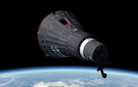

Program Description
The Mercury space program was NASA’s first human spaceflight initiative, launched in 1958 with the goal of putting a man into space and orbiting the Earth. Its main objective was to test human endurance and the effects of space travel, paving the way for future space exploration. The program successfully demonstrated that humans could survive and operate in space for short periods of time. Six astronauts, known as "Mercury Seven," were selected to fly aboard the spacecraft. The program culminated in the successful flight of John Glenn, who became the first American to orbit Earth in 1962. Mercury laid the groundwork for subsequent programs like Gemini and Apollo, pushing the boundaries of space exploration.
Notable Missions
- Freedom 7: On May 5, 1961, Alan Shepard became the first American in space, though his flight lasted only 15 minutes, reaching an altitude of 116 miles.
- Friendship 7: On February 20, 1962, John Glenn made history by becoming the first American to orbit Earth. His flight lasted nearly five hours and completed three orbits of the planet.
- Liberty Bell 7: On July 21, 1961, Gus Grissom made his second suborbital flight. Although the mission was successful, the spacecraft sank after splashdown, earning the mission’s place in history.
- Aurora 7: Scott Carpenter followed Glenn’s flight by orbiting the Earth three times on May 24, 1962, further proving the feasibility of human space travel.
Notable Astronauts
- Alan Shepard: The first American in space.
- Gus Grissom: The second American in space, though his flight was suborbital.
- John Glenn: The first American to orbit Earth.
- Scott Carpenter: The fourth astronaut to fly in space and the second to orbit Earth.
Spacecraft
The primary spacecraft used in the Mercury program was the Mercury capsule, a small, spherical spacecraft designed for single astronauts. The capsule was equipped with basic life support systems and instruments for navigation and communication. It was mounted atop a Redstone or Atlas rocket for launch. Each capsule was designed for short-duration flights, with a heat shield to protect the astronaut during re-entry and a parachute system for a safe landing in the ocean. The spacecraft were launched from Cape Canaveral, Florida, and they set the stage for the more complex spacecraft of the Gemini and Apollo programs. The capsule was launch atop both the Redstone and Atlas rockets.
